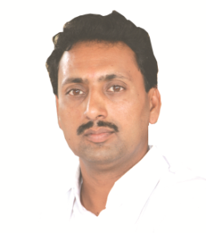

GENERAL DETAILS
Secretary’s Desk
Dear Technocrats,
It gives me immense pleasure to give you a glimpse of our world of engineering education.
It is not so long ago that the engineering college was established at a small place like Chikhli.
Chikhli is a small but progressive and modern town in the state of Maharashtra.
It has occupied its place of pride on the map of the country through the Anuradha Engineering College.
In 1993 the engineering college was established by me and my efficient and admirable colleagues with a view
to provide quality education to the young generation of our country. My vision of engineers is not only of
an efficient technocrat, but a complete and matured human being who can contribute to the development of the
nation by the knowledge and skills he acquires during his studies. Human beings can be thought to be complete
only if they owe a certain degree of responsibility towards their society and work relentlessly to fulfill them.
We at Anuradha Nagar campus are in pursuit to develop such dedicated work force for the nation.
To achieve these objectives, we have developed learning facilities in a very congenial atmosphere
conducive to learning. Our Institution has got ISO 9001:2000 Certificate which indicates that the
institute is going towards quality education to meet global education standards. We hope that well
developed facilities in Anuradha Nagar campus will help you to grow into a proud alumni of our college.
Needless to say that we will always be with you in your request to advance your career and make our institution and our country proud.
Wishing you all the best for your bright future with us
.
Siddhavinayak Bondre
Chairman PRMSS
Chairman's Desk

Dear Students,
The Anuradha Engineering College since its inception,
is striving hard to make its students responsible citizens of India. We believe that the
students from rural areas have tremendous potential in terms of creativity and out-of-box
thinking. However, they lack in some of the areas, viz. communication skills and interpersonal
relationship. Being the window of knowledge, we proudly focus on these needs of students. Ours
are systematic efforts to impart modern knowledge along with the sense of humanity.
The campus of Anuradha Nagar is a campus of educational ambience which houses
the esteemed Anuradha College of Pharmacy, Anuradha Polytechnic, Anuradha Nursing School,
Mungsaji Maharaj Co-operative Spinning Mills Ltd, and Anuradha English Medium School
as our sister concerns. The Carnivals, the sports meets and other activities keep the
academic year bubbling with enthusiasm. And yes, the regular classes by highly qualified and
well trained staff is a salient feature. The Anuradha Engineering College provides helpful
guidelines and techniques for all round development of students to face the challenges in this
competitive world, showing them the winning ways of success.
We are open to suggestions from any
segment of the society because we believe in the notion ‘let noble thoughts come to us from every side’.
We are open to suggestions from any segment of the society because we believe in the notion ‘let noble thoughts come to us from every side’.
Rahul Bondre
Secretary PRMSS
Principal’s Desk
Dear young friends,
The Anuradha Engineering College since its inception,
is striving hard to make It is indeed a great honour to head the Anuradha Engineering College, Chikhli,
a Centre of Excellence. Established in 1993, the Anuradha Engineering College conducts undergraduate
degree courses in Mechanical Engineering, Computer Science and Engineering, Electronics & Telecommunication Engineering,
Chemical Engineering, Textile Engineering, Information Technology and postgraduate degree course in Chemical Engineering.
I would also like to mention proudly that our institution is accredited by National Board of Accreditation (NBA),
New Delhi and is permanently affiliated to Sant Gadge Baba Amravati University, Amravati. Our Institute has been
conferred with ISO 9001:2008 certification to meet the global education standards. The College has excellent laboratories,
workshop facilities and a rich library with a spacious reading room. We, at Anuradha Engineering College believe in all
round development of our students. Besides educational facilities, college has Maharana Pratap indoor stadium with complete
range of gymnasium equipments, Olympic standard wooden floored badminton courts, table tennis facility and grounds for football,
volleyball, basketball and cricket. The College has a full-fledged Training and Placement cell which looks after Training and
Placement of students and prepare them for competitive examinations like GATE, GRE, TOEFL, etc. We lay special emphasis on motivating
the students for higher education.
Our faculties are a team of motivated group offering untiring guidance in shaping the future of our students.
We inculcate a sense of humility, simplicity and modesty into the student's personality through the culture of honesty,
sincerity and hard work. The College organizes blood donation camps, plantation activities and N.S.S. Camps. We, at Anuradha
Engineering College are focusing on Education & Training, Teaching & Learning, Research & Outreach through the Industry -
Institution Interactions. As a head of the institute, I assure you that we are doing our best to take the institute to a next
level of excellence. I shall be very happy to address to the queries of aspiring students and their parents. Please feel free
to contact me..
With Warm regards
Dr.Arun Nanhai